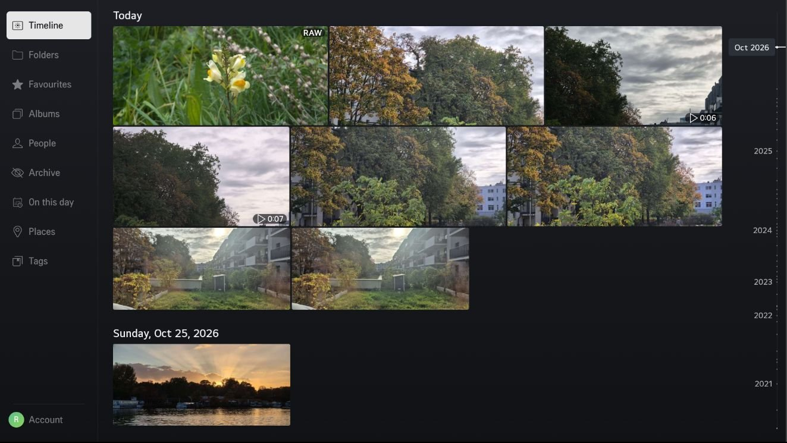

Your whole library, section by section
Memories TV follows Memories' web app, in the same order. It only reads your library: nothing on your server is changed.
- Timeline
- Folders
- Favourites
- Albums
- People
- Archive
- On this day
- Places
- Tags
- Explore
- Map
- Trash
Features
Timeline
Day by day, in a justified grid that keeps every photo's shape. A date scrubber jumps straight to any month or year.
Full-screen viewer
Controls that fade away to leave the photo alone, and a rotate button for sideways shots.
Info panel
The photo's date, place, people, tags, camera and exposure, and file details, as in Memories' info sidebar.
Videos
Played from the original file with seeking, including HDR. No transcoding needed on the server.
Slideshow
Crossfades, shuffle and an adjustable interval, and the TV's screen saver stays away while it runs.
Sign in with your phone
Scan a QR code and approve the TV. Your password is never typed on the TV; two-factor and single sign-on work as usual.
Several accounts
Add servers or family members and switch between them.
RAW files
A RAW badge, and RAW files stacked behind the JPG or HEIC of the same name when Memories stacks them.
Made for the remote
Every screen works with the arrow keys; the Magic Remote pointer and scroll wheel work too.
Requirements
TV
- An LG TV with webOS TV 23 or newer (2023 models onwards). Older TVs are not supported.
- Developer Mode enabled, to install the app.
Server
- Nextcloud with the Memories app.
- Reachable over HTTPS with a publicly trusted certificate, such as Let's Encrypt.
- Video previews enabled in Nextcloud, for video thumbnails.
- No CORS or reverse-proxy changes needed.
Install
Memories TV installs on a TV in Developer Mode with the webOS CLI. It isn't in the Homebrew Channel or LG's store yet.
- Install the webOS CLI and register your TV with
ares-setup-device. - Download the
.ipkfile of the latest release. - Install it:
ares-install --device <your TV> eu.whisprin.memoriestv_<version>_all.ipk
To build from source instead, see the README.
Signing in
- Enter your Nextcloud address, for example
https://cloud.example.com. The app checks that Memories is installed. - Scan the QR code with your phone, sign in to Nextcloud and choose Grant access.
- The TV continues by itself and opens your timeline.
The app gets its own app password, listed as Memories TV under Nextcloud → Settings → Security. Revoking it there signs the TV out.
Having trouble? See Troubleshooting or open an issue.